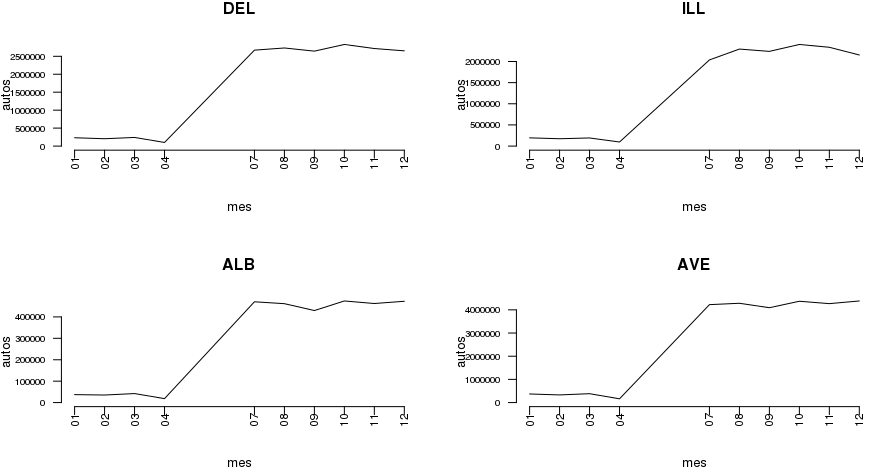
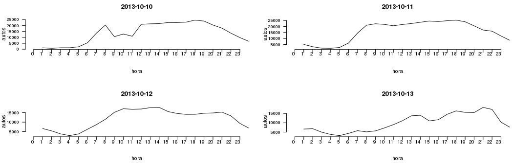
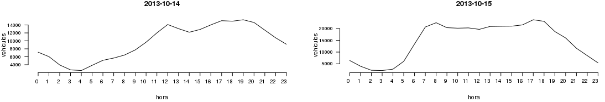
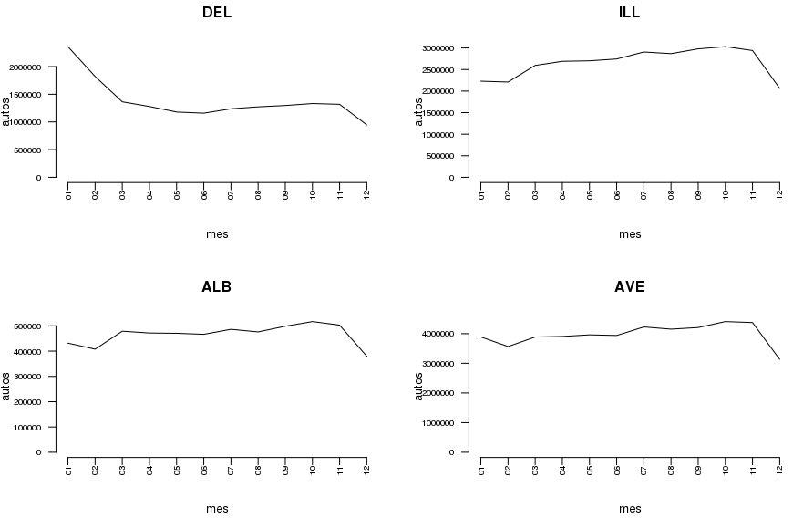
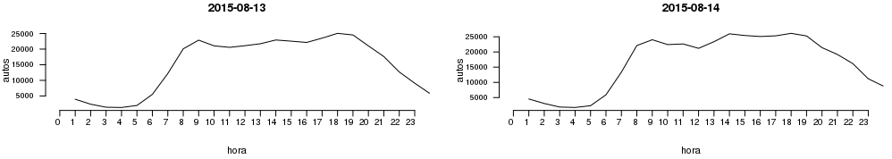
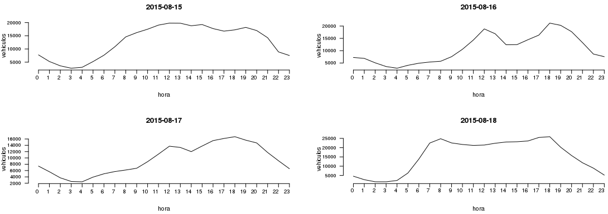

Analizando datos abiertos de peajes AUSA en autopistas
This article is in spanish because the open data obtained is from Argentina
Cuando salgo de viaje en auto junto a mi familia opto por diferentes estrategias, siempre
con el propósito de minimizar el tiempo de viaje y maximizar la seguridad. Mi estrategia
es en función de una variable sobre la que tengo un cierto control: el horario de salida.
Durante el viaje, observando el caudal de vehículos comienzo a formularme algunas
preguntas:
- ¿ En qué horario del día habrá mayor caudal de vehículos ?
- ¿ Si saliese una hora más temprano ó más tarde, habría menos tránsito ?
- ¿ Cuándo es el peor horario para ir ó regresar de un fin de semana largo ?
Los Datos Abiertos utilizados contienen variables numéricas, fecha/hora y
categóricas. Estos datos son un registro del flujo vehicular en cada una de cuatro
estaciones de peaje en la Ciudad de Buenos Aires, más adelante describo cuáles son
estas estaciones de peaje.
Obteniendo los datos
Peajes AUSA
comparte los datos abiertos en el
Catálogo de datos abiertos de
Gobierno de la Ciudad de Buenos Aires. Los datos utilizados en
este post pueden ser obtenidos con estas instrucciones de unix:
wget https://recursos-data.buenosaires.gob.ar/ckan2/autopistas/ausapasovehiculo-2013.csv
wget https://recursos-data.buenosaires.gob.ar/ckan2/autopistas/ausapasovehiculo-2015.csv
Los registros publicados como datos abiertos son
estadísticas aproximadas de estas cuatro estaciones de peaje:
- ALB Alberti (AU1 - 25 de Mayo) Alberti
- AVE Parque Avellaneda (AU6 - Perito Moreno)
- DEL De Au. Dellepiane (AU1 - 25 de Mayo)
- ILL Retiro (AU Pte. Arturo Illia)
A partir del año 2014 encontré que en los datos hay
ocho estaciones de peaje en lugar de cuatro. Sospecho que a cada una de las cuatro estaciones de peaje
la acompaña una etiqueta adicional, aunque desconozco aún el motivo de estas
cuatro estaciones adicionales, que son:
- SAR Alberti (AU1 - 25 de Mayo) Sarandi
- SAL Parque Avellaneda (AU6 - Perito Moreno)
- DEC De Au. Dellepiane (AU1 - 25 de Mayo)
- RET Retiro (AU Pte. Arturo Illia)
Preparando los datos
Comencé analizando datos del año 2013.
Primero transformé la fecha en un formato manejable. Código para leer el conjunto de datos:
ausa <- read.csv(file="ausapasovehiculo-2013.csv", sep=";")
ausa$FECHA2 <- as.Date(ausa$FECHA, format = "%m/%d/%Y");
ausa$MES <- format(ausa$FECHA2, "%m");
ausa$HORA <- as.character(ausa$HORA)
ausa$HORA1 <- as.numeric(gsub("^([0-9]*):.*", "\\1", ausa$HORA, perl=TRUE))
ausa$FECHA_HORA1 <- strptime(paste(ausa$FECHA, ausa$HORA), format="%m/%d/%Y %H:%M:%S")
ausa$FECHA_HORA2 <- strptime(paste(ausa$FECHA, ausa$HORA_FIN), format="%m/%d/%Y %H:%M:%S")
Utilizando los datos del año 2013, se preparó un gráfico de linea
con el caudal de vehículos por mes para cada una de las
cuatro estaciones de peaje. (Figura #1):

Figura #1
Particularidades de los datos
Para el mes Mayo y Junio de 2013 no hay datos (una pena porque aquí tienen lugar unos
feriados muy interesantes).
El caudal de vehículos de los meses
de vacaciones (de Enero a Abril) tiene valores inusuales: más adelante
analizando los datos del 2015 no se observa esta gran
diferencia en el caudal de vehículos respecto al resto del año.
Código para crear la figura #1:
old.par <- par(mfrow=c(2,2))
options(scipen=5)
las_estaciones <- c("DEL","ILL","ALB","AVE");
fecha1 = "2013-01-01";
fecha2 = "2014-01-01";
for (laestacion in las_estaciones) {
subpt <- ausa[ ausa$ESTACION == laestacion, ]
pp <- aggregate(cbind(subpt$CANTIDAD_PASOS) , by=list(FECHA=subpt$MES), FUN=sum, na.rm=TRUE)
tlab = pp$FECHA;
maxy = max(pp$V1)
miny = min(pp$V1)
lab <- format(tlab,format="%b-%Y")
plot(V1 ~ FECHA, pp, main=laestacion, ylim=c(0,maxy), xaxt = "n", ylab="autos", xlab="mes", type = "l", axes=FALSE)
axis(1, at=tlab, labels=FALSE)
axis(2, las=2, cex.axis=.7)
text(x=tlab, y=par()$usr[3]-0.06*(par()$usr[4]),labels=lab, srt=90, adj=1, xpd=TRUE, cex=.7)
}
¿ A qué hora salir un fin de semana largo ?
Sabiendo cuándo hubo un feriado, es posible estudiar el caudal de vehículos antes, durante y
después. Un científico de datos puede utilizar sus
herramientas para ganar tiempo y lo más importante: salud.
Aquí una lista de
feriados argentinos
Un fin de semana largo, a mitad de año:
Lunes 14 de Octubre de 2013 - Día del Respeto a la Diversidad Cultural: la mayoría saldría el viernes 11.
Analizando tránsito de días previos y posteriores al feriado del lunes 14 de Octubre de 2013
En este gráfico se observa la cantidad de vehículos que circulan los días previos,
durante y posterior al feriado del 14 de Octubre de 2013. Cada gráfico es un día, en el eje
X están las 24 horas de cada día y el eje Y es la
cantidad de vehículos total que pasaron por todas las estaciones de peaje de AUSA en la Ciudad de Buenos Aires.

Figura #2
LA IDA: El feriado fue el día Lunes 14 de Octubre, es razonable asumir que
para aprovechar el fin de semana la
mayoría partiríamos de viaje el viernes 11 de Octubre. Observar la figura #2 (Día 11 de Octubre).
No está facil la decisión, prácticamente todo el día desde las 8 de la mañana hasta las 19 hay
un caudál sostenido de vehículos.
Una opción podría ser salir el mismo
viernes 11 de Octubre a la madrugada ó esperar
a la noche, después de las 22
ya que el caudal de vehículos desciende alcanzando un mínimo a las 4 de la
madrugada del día siguiente: Sábado 12 de Octubre de 2013.

Figura #3
EL RETORNO: Asumiendo que la mayoría retomamos nuestras labores diarias
el día martes 15 de Octubre por la mañana, observar la figura #3 día 14 de Octubre.
Aquí el mayor caudal de autos es entre las 12 y las 21 horas
del día feriado, los máximos de caudal a las 13 horas, y entre las 18 y 22 horas.
Evitaría emprender el regreso a casa cerca del mediodía ó por la tarde. Una estrategia
que me ha dado resultado es salir por la mañana cerca de las 9 ó regresar a última hora
después de las 22, se viaja de noche pero se ahorra tiempo y stress.
Código para crear la Figura #2 y #3:
las_fechas <- c("2013-10-10", "2013-10-11", "2013-10-12", "2013-10-13", "2013-10-14", "2013-10-15")
coco <- aggregate(x=ausa$CANTIDAD_PASOS, by=list(ausa$FECHA2, ausa$HORA1), FUN=sum)
subpp <- xtabs(coco$x ~ coco$Group.2 + coco$Group.1)
subpp1 <- subpp[, las_fechas]
maxy = max(subpp1)
miny = min(subpp1)
tmin <- min(ausa$HORA1)
tmax <- max(ausa$HORA1)
tlab <- seq(tmin, tmax)
lab <- format(tlab,format="%H:%M:%S")
old.par <- par(mfrow=c(3, 2))
for (item in seq(1, length(las_fechas))) {
maxy = max(subpp1[,item])
miny = min(subpp1[,item])
plot(subpp1[, c(las_fechas[item])], main=las_fechas[item], ylim=c(miny, maxy), xlim=c(tmin,tmax), xlab="hora", ylab="autos", xaxt = "n", type = "l", axes=FALSE)
par(new=TRUE)
axis(1, at=tlab, labels=FALSE)
axis(2, las=2, cex.axis=.7)
text(x=tlab, y=par()$usr[3]-.14*(par()$usr[4]),labels=lab, adj=1, xpd=TRUE, cex=.7)
}
Datos más recientes, analizando el año 2015
Preparando los datos
ausa <- read.csv(file="ausapasovehiculo-2015.csv", sep=";")
ausa$FECHA2 <- as.Date(ausa$FECHA, format = "%d/%m/%Y");
ausa$MES <- format(ausa$FECHA2, "%m");
ausa$HORA <- as.character(ausa$HORA)
ausa$HORA1 <- as.numeric(gsub("^([0-9]*):.*", "\\1", ausa$HORA, perl=TRUE))
ausa$FECHA_HORA1 <- strptime(paste(ausa$FECHA, ausa$HORA), format="%d/%m/%Y %H:%M:%S")
ausa$FECHA_HORA2 <- strptime(paste(ausa$FECHA, ausa$HORA_FIN), format="%d/%m/%Y %H:%M:%S")
Se preparó un gráfico de linea con el
caudal de vehículos por mes para cada una de las cuatro estaciones de peaje.
Comparando con el análisis de los datos del año 2013, estos números no tienen una
marcada diferencia de flujo vehicular entre Enero a Marzo y el resto del año.
También es
interesante que en este set de datos no faltan valores para ningún mes.

Figura #4
Quisiera repetir el análisis de a qué hora hay mayor caudal de vehículos en la ida y
en el retorno de un feriado largo.
Feriado de interés del año 2015:
Agosto, Lunes 17 - Paso a la Inmortalidad del General José de San Martín.
Analizando tránsito del Lunes 17 de Agosto de 2015
En las figuras #5 y #6 se observa la cantidad de vehículos que circulan los días anteriores,
durante y posterior al feriado del Lunes 17 de Agosto de 2015.
LA IDA: El feriado en cuestión fue el día Lunes 17 de Agosto. Se asume
que la mayoría trabajamos de lunes a viernes y se sale de viaje el
viernes 14 de Agosto para aprovechar lo más posible el fin de semana.
¿ A qué hora conviene salir para ganar tiempo ?

Figura #5
Observando la figura #5, día 14 de agosto: Una opción es salir
a la madrugada (entre las 4 y 5 de la mañana). También se puede salir a la tarde,
después de las 19, ya que el caudal de vehículos desciende alcanzando un mínimo a las 4 de la
madrugada del día sábado 15 de Agosto de 2015.
EL RETORNO: Regresaría de este feriado largo el lunes 17 de agosto ó un día antes,
el domingo 16 de agosto. Alguno querría aprovechar lo más posible y regresar el martes 18 de agosto.
De optar por regresar un día antes al feriado (el 16 de agosto),
sería entre las 14 y 18 horas cuando
los datos indican un menor caudal vehicular.
Si regreso el lunes 17 de agosto, sería
por la mañana, antes del mediodía.

Figura #6
El día martes 18 de Agosto el caudal de vehículos regresa a su comportamiento normal con
mayor caudal vehicular cuando la gente va y regresa de sus trabajos.
las_fechas <- c("2015-08-13", "2015-08-14", "2015-08-15", "2015-08-16", "2015-08-17", "2015-08-18")
coco <- aggregate(x=ausa$CANTIDAD_PASOS, by=list(ausa$FECHA2, ausa$HORA1), FUN=sum)
subpp <- xtabs(coco$x ~ coco$Group.2 + coco$Group.1)
subpp1 <- subpp[, las_fechas]
maxy = max(subpp1)
miny = min(subpp1)
tmin <- min(ausa$HORA1)
tmax <- max(ausa$HORA1)
tlab <- seq(tmin, tmax)
lab <- format(tlab,format="%H:%M:%S")
old.par <- par(mfrow=c(3, 2))
for (item in seq(1, length(las_fechas))) {
maxy = max(subpp1[,item])
miny = min(subpp1[,item])
plot(subpp1[, c(las_fechas[item])], main=las_fechas[item], ylim=c(miny, maxy), xlim=c(tmin,tmax), xlab="hora", ylab="autos", xaxt = "n", type = "l", axes=FALSE)
par(new=TRUE)
axis(1, at=tlab, labels=FALSE)
axis(2, las=2, cex.axis=.7)
text(x=tlab, y=par()$usr[3]-.14*(par()$usr[4]),labels=lab, adj=1, xpd=TRUE, cex=.8)
}
Published: Friday, December 15, 2016
datamining